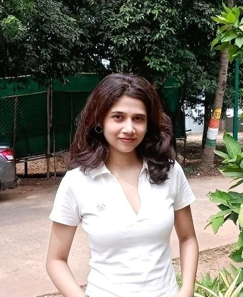

Curious about why people choose, and how brands can listen.
I'm a first year BBA student at IIM Bangalore. Psychology was my favourite subject in Class 12, and I've been using it in business ever since, from growing a travel agency's social media page from zero to 4,800+ followers to explaining maths and science to school students.

Sanskriti Sinha
Marketing & Consumer Behaviour
Academic Journey
2026 — 2029
Indian Institute of Management Bangalore
BBA in Digital Business and Entrepreneurship
Online degree, currently in 1st year
Class XII
Holy Mission Secondary School, Patna
CBSE, Humanities
91%
- Psychology was my favourite out of all six subjects.
Class X
St. Karen's High School, Patna
CBSE
87%
- House Captain in Class 10.
- Played badminton at inter-school level.
Work & Programs
2025
Local Travel Agency · Freelance
Social Media Manager
Independent project
- Built the agency's social media presence from scratch and grew it organically from 0 to 4,800+ followers.
- Planned, created and posted regular travel content to improve visibility and engagement.
- Turned the agency's local offerings into digital campaigns for a traditional, shop-based business.
2022 — 2025
Independent Private Tutoring
Academic Tutor, Maths & Science
Students up to Grade 8
- Broke hard ideas into simple, structured lessons for middle school students.
- Changed my teaching style for each student, which helped them improve steadily.
Sept — Dec 2026
McKinsey & Company
McKinsey Forward Program
Expected completion: December 2026
- Selected for a multi-month digital learning program on practical workplace skills, structured problem-solving, adaptability and clear business communication.
Skills & Where I'm Headed
Psychology meets brand building
Consumer behaviour and strategic marketing
Right now I'm building my base in business, statistics and digital skills at IIM Bangalore, with a clear interest in consumer behaviour and strategic marketing.
Down the line, I want to use psychological insights in real brand building, product positioning and growth campaigns.